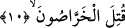

dururlar. Ancak her sapma giderek fazlalaşıp şiddetleneceğinden, bu durum, o kişiyi
mukayese kâbil olmayan büyük bir değişikliğe maruz bırakacaktır.
Bazı âlimler âyetin takdirini, “Allah’ın ilmi ve kazâsında döndürülmeleri mukadder
olanlar, Kur’an ve peygamberden döner” şeklinde yapmışlardır. Allah’ın ilminden
mahrûm kalan kimse, kitap ve peygambere îman etmekten de mahrumdur.
Gönüller bütünüyle mahzûn ciğerler kanla doludur
Herkes hakkındaki ezelî hüküm nasılsa öyledir.
Bu âyette işârî olarak şu husûsa da temas edilmektedir: Yol kesen haydutlar,
çoklukları sebebiyle erbâb-ı talepden her kimi nefs, hevâ, dünya, dünya ziyneti ve
şehveti ile makam ve nimetlerine çevirir, o tâlib de bunlara kanıp saparsa, o kişi
matlûbundan mahrum bırakılır ve nefsinin arzuları onu helâk uçurumlarına yuvarlar.
Salahdan sonra fesâddan Allah’a sığınırız.
Diğer taraftan da aziz bir münâdi ona: “Daha önce nice arzular ve dünyevî ihtiraslar
seni kendine çağırdığı halde onlardan uzak durmuştun. Şimdi niçin onlara
kapıldın?”diye seslenir durur.
10. Kahrolsun o koyu yalancılar!
“O (çeşitli sözleri) atan yalancılar kahrolsun.” Bu ifâde, “Kahrolası insan ne
kadar da nankördür!” (Abese 80/17) âyetinde olduğu gibi bir bedduâ cümlesidir.
Aslında bu, yalancıların ölüm ve helâkini isteyen bir bedduâ iken (yumuşatılarak) lânet
ve kötüleme mesâbesine indirilmiştir. “Hars”, yalan söylemek demektir.
Araplar, hurma ağacının üzerindeki yaş hurmadan ne kadar kuru hurma çıkabileceğini
tahmin etmeye “harsu’s-simâr” derler. Bundan hareketle sırf zan ve tahmine göre
söylenen, atılan söze de “hars” denilir. Zira o sözü atan kimse, doğruya isabet etmiş
veya edememiş olsa da, bunu bilerek veya zann-ı gâlibiyle yâhut duyumu ile söylemiş
olmayıp bilâkis bir yalancının yaptığı gibi zan ve tahminine yönelmiştir. Dolayısıyla,
her ne kadar o söz, kendinden haber verilen şeye uygun olsa bile, bu çeşit bir sözü
söyleyen kimselere de “yalancı” denilmektedir. Nitekim Allah Teâlâ, münafıkların Hz.
Muhammed (s.a.)’in Allah’ın rasûlü olduğuna dâir şehâdetleri husûsunda, aslında bu
söz gerçeğe uygun olmakla birlikte, “Allah münâfıkların «yalancı» olduklarına
tanıklılık eder” (el-Münâfikun 63/1) buyurmaktadır. Buna göre doğru bir bilgiye
dayanmaksızın sırf zan ve tahminlerine göre Hz. Muhammed ve Kur’an hakkında
çelişkili yalan sözler söyleyen kimseler de yalancı sayılıp onların sözlerinin bir
geçerliliği, doğruluk payı yoktur. Sanki burada: “İşte bahsedilen bu yalancılar